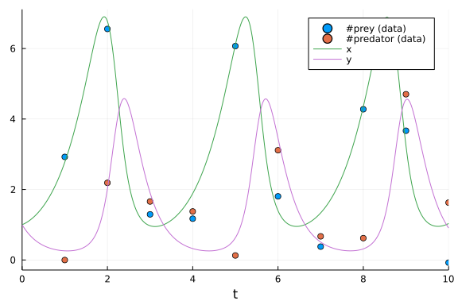

Lotka-Volterra Bayesian Parameter Estimation Benchmarks
Parameter Estimation of Lotka-Volterra Equation using DiffEqBayes.jl
using DiffEqBayes, StanSample, DynamicHMCusing Distributions, BenchmarkTools
using OrdinaryDiffEq, RecursiveArrayTools, ParameterizedFunctions
using Plotsgr(fmt=:png)Plots.GRBackend()Initializing the problem
f = @ode_def LotkaVolterraTest begin
dx = a*x - b*x*y
dy = -c*y + d*x*y
end a b c d(::Main.##WeaveSandBox#512.LotkaVolterraTest{Main.##WeaveSandBox#512.var"##
#ParameterizedDiffEqFunction#514", Main.##WeaveSandBox#512.var"###Parameter
izedTGradFunction#515", Main.##WeaveSandBox#512.var"###ParameterizedJacobia
nFunction#516", Nothing, Nothing, ModelingToolkit.ODESystem}) (generic func
tion with 1 method)u0 = [1.0,1.0]
tspan = (0.0,10.0)
p = [1.5,1.0,3.0,1,0]5-element Vector{Float64}:
1.5
1.0
3.0
1.0
0.0prob = ODEProblem(f,u0,tspan,p)
sol = solve(prob,Tsit5())retcode: Success
Interpolation: specialized 4th order "free" interpolation
t: 34-element Vector{Float64}:
0.0
0.0776084743154256
0.23264513699277584
0.4291185174543143
0.6790821987497083
0.9444046158046306
1.2674601546021105
1.6192913303893046
1.9869754428624007
2.2640902393538296
⋮
7.584863345264154
7.978068981329682
8.48316543760351
8.719248247740158
8.949206788834692
9.200185054623292
9.438029017301554
9.711808134779586
10.0
u: 34-element Vector{Vector{Float64}}:
[1.0, 1.0]
[1.0454942346944578, 0.8576684823217128]
[1.1758715885138271, 0.6394595703175443]
[1.419680960717083, 0.4569962601282089]
[1.8767193950080012, 0.3247334292791134]
[2.588250064553348, 0.26336255535952197]
[3.860708909220769, 0.2794458098285261]
[5.750812667710401, 0.522007253793458]
[6.8149789991301635, 1.9177826328390826]
[4.392999292571394, 4.1946707928506015]
⋮
[2.6142539677883176, 0.26416945387526103]
[4.241076127191776, 0.30512367629219644]
[6.791123785297794, 1.1345287797146462]
[6.265370675764816, 2.741693507540289]
[3.7807651118879675, 4.431165685863469]
[1.8164201406817277, 4.064056625315935]
[1.1465021407690634, 2.7911706616216554]
[0.9557986135403285, 1.6235622951850475]
[1.0337581256020667, 0.9063703842885965]We take the solution data obtained and add noise to it to obtain data for using in the Bayesian Inference of the parameters
t = collect(range(1,stop=10,length=10))
sig = 0.49
data = convert(Array, VectorOfArray([(sol(t[i]) + sig*randn(2)) for i in 1:length(t)]))2×10 Matrix{Float64}:
2.92496 6.55539 1.29394 1.17142 … 4.27708 3.66724 -0.0763453
-0.00237221 2.18773 1.65903 1.37665 0.619101 4.70253 1.62661Plots of the actual data and generated data
scatter(t, data[1,:], lab="#prey (data)")
scatter!(t, data[2,:], lab="#predator (data)")
plot!(sol)
priors = [truncated(Normal(1.5,0.5),0.5,2.5),truncated(Normal(1.2,0.5),0,2),truncated(Normal(3.0,0.5),1,4),truncated(Normal(1.0,0.5),0,2)]4-element Vector{Distributions.Truncated{Distributions.Normal{Float64}, Dis
tributions.Continuous, Float64}}:
Truncated(Distributions.Normal{Float64}(μ=1.5, σ=0.5); lower=0.5, upper=2.
5)
Truncated(Distributions.Normal{Float64}(μ=1.2, σ=0.5); lower=0.0, upper=2.
0)
Truncated(Distributions.Normal{Float64}(μ=3.0, σ=0.5); lower=1.0, upper=4.
0)
Truncated(Distributions.Normal{Float64}(μ=1.0, σ=0.5); lower=0.0, upper=2.
0)Stan.jl backend
The solution converges for tolerance values lower than 1e-3, lower tolerance leads to better accuracy in result but is accompanied by longer warmup and sampling time, truncated normal priors are used for preventing Stan from stepping into negative values.
@btime bayesian_result_stan = stan_inference(prob,t,data,priors,num_samples=10_000,print_summary=false, vars = (DiffEqBayes.StanODEData(), InverseGamma(2, 3)))Error: IOError: cd(""): no such file or directory (ENOENT)Turing.jl backend
@btime bayesian_result_turing = turing_inference(prob, Tsit5(), t, data, priors, num_samples=10_000)34.555 s (235188650 allocations: 22.53 GiB)
Chains MCMC chain (10000×17×1 Array{Float64, 3}):
Iterations = 1001:1:11000
Number of chains = 1
Samples per chain = 10000
Wall duration = 34.45 seconds
Compute duration = 34.45 seconds
parameters = theta[1], theta[2], theta[3], theta[4], σ[1]
internals = lp, n_steps, is_accept, acceptance_rate, log_density, h
amiltonian_energy, hamiltonian_energy_error, max_hamiltonian_energy_error,
tree_depth, numerical_error, step_size, nom_step_size
Summary Statistics
parameters mean std naive_se mcse ess rhat
⋯
Symbol Float64 Float64 Float64 Float64 Float64 Float64
⋯
theta[1] 1.5540 0.1110 0.0011 0.0024 2230.3095 1.0003
⋯
theta[2] 1.0483 0.1186 0.0012 0.0023 2646.9035 1.0000
⋯
theta[3] 2.8318 0.2825 0.0028 0.0061 2238.1349 1.0004
⋯
theta[4] 0.9606 0.1079 0.0011 0.0024 2238.3050 1.0004
⋯
σ[1] 0.6295 0.1180 0.0012 0.0023 2966.2522 0.9999
⋯
1 column om
itted
Quantiles
parameters 2.5% 25.0% 50.0% 75.0% 97.5%
Symbol Float64 Float64 Float64 Float64 Float64
theta[1] 1.3526 1.4783 1.5474 1.6239 1.7887
theta[2] 0.8467 0.9678 1.0356 1.1170 1.3079
theta[3] 2.3225 2.6373 2.8194 3.0070 3.4393
theta[4] 0.7692 0.8851 0.9537 1.0285 1.1929
σ[1] 0.4495 0.5470 0.6148 0.6918 0.9066DynamicHMC.jl backend
@btime bayesian_result_dynamichmc = dynamichmc_inference(prob,Tsit5(),t,data,priors,num_samples=10_000)13.581 s (54190767 allocations: 9.28 GiB)
(posterior = NamedTuple{(:parameters, :σ), Tuple{Vector{Float64}, Vector{Fl
oat64}}}[(parameters = [1.3560856863610198, 0.8411954825462745, 3.276705056
0345132, 1.2612272343741764], σ = [0.8523434975807723, 0.6348400125606628])
, (parameters = [1.9147270533500478, 1.2420520328315874, 2.0939333440171723
, 0.6920507216391846], σ = [0.6330161785298886, 0.794737325136872]), (param
eters = [1.7565717871348656, 1.42628559795481, 2.4270181160610176, 0.786659
0805870123], σ = [0.4982239535780015, 0.747951266400035]), (parameters = [1
.8836710718605245, 1.4231610386664946, 2.1892542251328004, 0.71044828039956
92], σ = [0.3613688518584914, 1.1598150543875911]), (parameters = [1.881213
3558856736, 1.5163172678495376, 2.168560829242869, 0.7375759873187356], σ =
[0.7487832943766738, 0.7131910947292064]), (parameters = [1.85174907718051
07, 1.548417757297178, 2.265029945009094, 0.7707043328653318], σ = [0.65815
06877337867, 0.6656045575857542]), (parameters = [1.5869473402473324, 1.044
6165880390061, 2.694686500412227, 0.8917821259622943], σ = [0.5092812651553
529, 0.901420511627605]), (parameters = [1.4789197763349509, 0.986522129721
5293, 2.936411221401268, 1.0442141778377927], σ = [0.6512009244489875, 0.80
22372827209873]), (parameters = [1.6040137789201918, 1.089160836531379, 2.6
38703090907677, 0.9438320429324727], σ = [0.44647986987524046, 0.4788085997
376483]), (parameters = [1.5205783195365443, 0.9505670195955829, 2.78930907
58593764, 1.0340688469518138], σ = [0.8257131195998283, 0.6206849880705242]
) … (parameters = [1.5643198457752638, 0.9340752228104312, 2.803764677822
7576, 0.9784109921164259], σ = [0.5304922570011605, 0.7114265018229398]), (
parameters = [1.5195088962433656, 1.0509213138846885, 2.95344901791206, 1.0
197970791459743], σ = [0.7691131362798004, 0.45921449138410503]), (paramete
rs = [1.5572433605761513, 0.9474411137361921, 2.790300597100506, 0.96752638
16156817], σ = [0.7212865187303628, 0.42567991612977024]), (parameters = [1
.6810704710023163, 1.256910130770644, 2.515138950454546, 0.8816001792468691
], σ = [0.6235763771172779, 0.7951647961550499]), (parameters = [1.56792736
91925915, 1.0630619157492862, 2.755171220171664, 0.9672713996331912], σ = [
0.5493067939131835, 0.4818934034260019]), (parameters = [1.7187166474946842
, 1.105991888154835, 2.3603677032177, 0.8295007534662142], σ = [0.694615781
4143181, 0.5376660998184748]), (parameters = [1.58777988492624, 1.128083099
323978, 2.6656506689007657, 0.9105125659499727], σ = [1.0196770463406821, 0
.5444437576959944]), (parameters = [1.4784984945837596, 1.1436381735287722,
3.0181219757109368, 0.9905296943335788], σ = [0.5374816906886049, 0.687373
5474954321]), (parameters = [1.4991876356386111, 1.1289525356293983, 2.8581
22721863657, 1.0108699966266017], σ = [0.6577792071966412, 0.68625172125593
34]), (parameters = [1.4757619971005749, 1.0877591503825121, 3.097470928326
165, 0.9851302796541229], σ = [0.752312889823752, 0.5779172284968397])], ch
ain = [[0.30460237805349183, -0.1729312054173292, 1.1868383614043827, 0.232
08524247257045, -0.15976566722785077, -0.4543822605572227], [0.649575081586
4135, 0.21676487702310349, 0.7390442800492317, -0.36809602888412185, -0.457
25929866553966, -0.22974362755762948], [0.5633640613078359, 0.3550735810096
228, 0.8866633911010384, -0.23996031299868262, -0.6967055970649904, -0.2904
1745500174615], [0.6332225706039322, 0.35288048112804987, 0.783560949363658
4, -0.34185912733933915, -1.0178560919802764, 0.1482605565342572], [0.63191
6970726361, 0.41628454490839034, 0.7740637351993089, -0.3043861624232415, -
0.28930566392783474, -0.3380058794294828], [0.616130639561204, 0.4372336078
1445664, 0.8175879796021708, -0.2604504642270564, -0.4183213651613511, -0.4
0705954216421486], [0.4618122590449882, 0.04364991669390797, 0.991281871216
8704, -0.11453342964234856, -0.6747548312475582, -0.10378341368428193], [0.
39131194042854983, -0.013569521209968904, 1.0771881627297062, 0.04326461960
544531, -0.4289370446864181, -0.22035085113278918], [0.47250909975667266, 0
.08540752499344775, 0.9702875430096572, -0.05780704928876854, -0.8063609639
478881, -0.736454344436959], [0.41909073587584816, -0.05069660970707378, 1.
0257939221035126, 0.033501356995224704, -0.19150787862136737, -0.4769315913
382899] … [0.4474511261862245, -0.06819830565539971, 1.0309630419068823,
-0.02182545988444086, -0.6339499166968968, -0.3404831671072044], [0.4183871
880751538, 0.04966722123735558, 1.0829736460323067, 0.019603665490841547, -
0.2625171989976397, -0.7782378765825054], [0.44291718158621485, -0.05399049
304798054, 1.0261493309258796, -0.03301258663013431, -0.3267188298865166, -
0.8540675857205173], [0.5194307756193474, 0.2286564320407995, 0.92232805071
52303, -0.12601663726355633, -0.47228402398287755, -0.22920589504849737], [
0.44975460018739066, 0.06115334389995819, 1.0134795895563526, -0.0332761614
4548497, -0.5990981703991382, -0.7300323441076859], [0.5415778771504612, 0.
10074256867436272, 0.8588174133491328, -0.18693126101423946, -0.36439641878
295687, -0.620517543799974], [0.4623367417100755, 0.12051981997585018, 0.98
04481812508921, -0.093747578756527, 0.01948595592646843, -0.607990633595138
2], [0.39102704210477646, 0.13421456104949944, 1.1046347756028188, -0.00951
5434157531946, -0.6208605833956586, -0.3748773972745112], [0.40492338516185
555, 0.12129024321149647, 1.050165018356139, 0.010811342874526248, -0.41888
59553396644, -0.3765107779561748], [0.389174464599485, 0.08411975479426707,
1.1305859489488401, -0.014981382947861444, -0.2846029646749977, -0.5483246
23856995]], tree_statistics = DynamicHMC.TreeStatisticsNUTS[DynamicHMC.Tree
StatisticsNUTS(-26.76783433271972, 5, turning at positions -6:25, 0.8177992
745158595, 31, DynamicHMC.Directions(0x78cff3b9)), DynamicHMC.TreeStatistic
sNUTS(-28.6969969039759, 6, turning at positions -14:49, 0.958686104619485,
63, DynamicHMC.Directions(0xd0e991b1)), DynamicHMC.TreeStatisticsNUTS(-27.
997324544696646, 5, turning at positions -6:25, 0.9044836359874272, 31, Dyn
amicHMC.Directions(0x6f55e339)), DynamicHMC.TreeStatisticsNUTS(-30.46578539
0754, 5, turning at positions -7:24, 0.9870739748884104, 31, DynamicHMC.Dir
ections(0xed7fcc78)), DynamicHMC.TreeStatisticsNUTS(-29.703654383313022, 6,
turning at positions -35:28, 0.8278444392315645, 63, DynamicHMC.Directions
(0x6c0a469c)), DynamicHMC.TreeStatisticsNUTS(-28.94268810589009, 5, turning
at positions -14:17, 0.9887996675334482, 31, DynamicHMC.Directions(0x4f6d0
7b1)), DynamicHMC.TreeStatisticsNUTS(-29.527373150960383, 6, turning at pos
itions -15:48, 0.863791636182969, 63, DynamicHMC.Directions(0x44a47df0)), D
ynamicHMC.TreeStatisticsNUTS(-26.187444175740218, 5, turning at positions 2
1:36, 0.9563476459356129, 63, DynamicHMC.Directions(0x1da10f64)), DynamicHM
C.TreeStatisticsNUTS(-26.37766208915921, 5, turning at positions -2:29, 0.9
099516434792242, 31, DynamicHMC.Directions(0xbaf7df9d)), DynamicHMC.TreeSta
tisticsNUTS(-24.784552955057848, 5, turning at positions -29:-60, 0.9997967
817552178, 63, DynamicHMC.Directions(0x5ea21383)) … DynamicHMC.TreeStatis
ticsNUTS(-27.217604615445683, 5, turning at positions -11:20, 0.79795859083
76962, 31, DynamicHMC.Directions(0xd5f2a9f4)), DynamicHMC.TreeStatisticsNUT
S(-25.494411652264347, 5, turning at positions -30:1, 0.9867404743777803, 3
1, DynamicHMC.Directions(0x6e279501)), DynamicHMC.TreeStatisticsNUTS(-24.66
325902497836, 5, turning at positions -20:11, 0.9516500682557872, 31, Dynam
icHMC.Directions(0xbfd1320b)), DynamicHMC.TreeStatisticsNUTS(-25.2876403980
89913, 5, turning at positions 1:32, 0.9877256061526775, 63, DynamicHMC.Dir
ections(0x83d42a60)), DynamicHMC.TreeStatisticsNUTS(-25.774791885071163, 5,
turning at positions -30:1, 0.9020488445441377, 31, DynamicHMC.Directions(
0x46830901)), DynamicHMC.TreeStatisticsNUTS(-25.96934426435437, 5, turning
at positions -23:-38, 0.9969728439418637, 47, DynamicHMC.Directions(0xfd527
849)), DynamicHMC.TreeStatisticsNUTS(-27.65584000935441, 5, turning at posi
tions -4:27, 0.9461166661256578, 31, DynamicHMC.Directions(0x57e7e0bb)), Dy
namicHMC.TreeStatisticsNUTS(-28.06578282618996, 5, turning at positions -31
:0, 0.8145433654876126, 31, DynamicHMC.Directions(0xeb8a4ce0)), DynamicHMC.
TreeStatisticsNUTS(-25.271503904131443, 4, turning at positions -11:-26, 1.
0, 31, DynamicHMC.Directions(0x6e3e9025)), DynamicHMC.TreeStatisticsNUTS(-2
5.161761854553365, 5, turning at positions -25:-40, 0.9507090039650783, 63,
DynamicHMC.Directions(0xf3d78a57))], κ = Gaussian kinetic energy (Diagonal
), √diag(M⁻¹): [0.07251903214053299, 0.10783022000930166, 0.094587929207132
08, 0.11757534180751976, 0.26488031177460764, 0.26760158958740266], ϵ = 0.0
9757522961190307)Conclusion
Lotka-Volterra Equation is a "predator-prey" model, it models population of two species in which one is the predator (wolf) and the other is the prey (rabbit). It depicts a cyclic behaviour, which is also seen in its Uncertainity Quantification Plots. This behaviour makes it easy to estimate even at very high tolerance values (1e-3).
Appendix
These benchmarks are a part of the SciMLBenchmarks.jl repository, found at: https://github.com/SciML/SciMLBenchmarks.jl. For more information on high-performance scientific machine learning, check out the SciML Open Source Software Organization https://sciml.ai.
To locally run this benchmark, do the following commands:
using SciMLBenchmarks
SciMLBenchmarks.weave_file("benchmarks/BayesianInference","DiffEqBayesLotkaVolterra.jmd")Computer Information:
Julia Version 1.7.3
Commit 742b9abb4d (2022-05-06 12:58 UTC)
Platform Info:
OS: Linux (x86_64-pc-linux-gnu)
CPU: AMD EPYC 7502 32-Core Processor
WORD_SIZE: 64
LIBM: libopenlibm
LLVM: libLLVM-12.0.1 (ORCJIT, znver2)
Environment:
JULIA_CPU_THREADS = 128
BUILDKITE_PLUGIN_JULIA_CACHE_DIR = /cache/julia-buildkite-plugin
JULIA_DEPOT_PATH = /cache/julia-buildkite-plugin/depots/5b300254-1738-4989-ae0a-f4d2d937f953
Package Information:
Status `/cache/build/exclusive-amdci1-0/julialang/scimlbenchmarks-dot-jl/benchmarks/BayesianInference/Project.toml`
[6e4b80f9] BenchmarkTools v1.3.1
[ebbdde9d] DiffEqBayes v3.0.0
[459566f4] DiffEqCallbacks v2.24.0
[31c24e10] Distributions v0.25.67
[bbc10e6e] DynamicHMC v3.1.2
[1dea7af3] OrdinaryDiffEq v6.20.0
[65888b18] ParameterizedFunctions v5.13.2
[91a5bcdd] Plots v1.31.7
[731186ca] RecursiveArrayTools v2.32.0
[31c91b34] SciMLBenchmarks v0.1.1
[c1514b29] StanSample v6.9.4
[fce5fe82] Turing v0.21.10And the full manifest:
Status `/cache/build/exclusive-amdci1-0/julialang/scimlbenchmarks-dot-jl/benchmarks/BayesianInference/Manifest.toml`
[a4c015fc] ANSIColoredPrinters v0.0.1
[c3fe647b] AbstractAlgebra v0.27.3
[621f4979] AbstractFFTs v1.2.1
[80f14c24] AbstractMCMC v4.1.3
[7a57a42e] AbstractPPL v0.5.2
[1520ce14] AbstractTrees v0.4.2
[79e6a3ab] Adapt v3.4.0
[0bf59076] AdvancedHMC v0.3.5
[5b7e9947] AdvancedMH v0.6.8
[576499cb] AdvancedPS v0.3.8
[b5ca4192] AdvancedVI v0.1.5
[dce04be8] ArgCheck v2.3.0
[ec485272] ArnoldiMethod v0.2.0
[4fba245c] ArrayInterface v6.0.22
[30b0a656] ArrayInterfaceCore v0.1.17
[6ba088a2] ArrayInterfaceGPUArrays v0.2.1
[015c0d05] ArrayInterfaceOffsetArrays v0.1.6
[b0d46f97] ArrayInterfaceStaticArrays v0.1.4
[dd5226c6] ArrayInterfaceStaticArraysCore v0.1.0
[15f4f7f2] AutoHashEquals v0.2.0
[13072b0f] AxisAlgorithms v1.0.1
[39de3d68] AxisArrays v0.4.6
[198e06fe] BangBang v0.3.36
[9718e550] Baselet v0.1.1
[6e4b80f9] BenchmarkTools v1.3.1
[e2ed5e7c] Bijections v0.1.4
[76274a88] Bijectors v0.10.3
[62783981] BitTwiddlingConvenienceFunctions v0.1.4
[2a0fbf3d] CPUSummary v0.1.25
[00ebfdb7] CSTParser v3.3.6
[336ed68f] CSV v0.10.4
[49dc2e85] Calculus v0.5.1
[082447d4] ChainRules v1.44.2
[d360d2e6] ChainRulesCore v1.15.3
[9e997f8a] ChangesOfVariables v0.1.4
[fb6a15b2] CloseOpenIntervals v0.1.10
[944b1d66] CodecZlib v0.7.0
[35d6a980] ColorSchemes v3.19.0
[3da002f7] ColorTypes v0.11.4
[c3611d14] ColorVectorSpace v0.9.9
[5ae59095] Colors v0.12.8
[861a8166] Combinatorics v1.0.2
[a80b9123] CommonMark v0.8.6
[38540f10] CommonSolve v0.2.1
[bbf7d656] CommonSubexpressions v0.3.0
[34da2185] Compat v3.45.0
[5224ae11] CompatHelperLocal v0.1.24
[b152e2b5] CompositeTypes v0.1.2
[a33af91c] CompositionsBase v0.1.1
[8f4d0f93] Conda v1.7.0
[88cd18e8] ConsoleProgressMonitor v0.1.2
[187b0558] ConstructionBase v1.4.0
[d38c429a] Contour v0.6.2
[adafc99b] CpuId v0.3.1
[a8cc5b0e] Crayons v4.1.1
[9a962f9c] DataAPI v1.10.0
[a93c6f00] DataFrames v1.3.4
[864edb3b] DataStructures v0.18.13
[e2d170a0] DataValueInterfaces v1.0.0
[244e2a9f] DefineSingletons v0.1.2
[b429d917] DensityInterface v0.4.0
[2b5f629d] DiffEqBase v6.95.3
[ebbdde9d] DiffEqBayes v3.0.0
[459566f4] DiffEqCallbacks v2.24.0
[163ba53b] DiffResults v1.0.3
[b552c78f] DiffRules v1.11.0
[b4f34e82] Distances v0.10.7
[31c24e10] Distributions v0.25.67
[ced4e74d] DistributionsAD v0.6.42
[ffbed154] DocStringExtensions v0.8.6
[e30172f5] Documenter v0.27.22
[5b8099bc] DomainSets v0.5.11
[fa6b7ba4] DualNumbers v0.6.8
[bbc10e6e] DynamicHMC v3.1.2
[366bfd00] DynamicPPL v0.20.0
[7c1d4256] DynamicPolynomials v0.4.5
[cad2338a] EllipticalSliceSampling v1.0.0
[d4d017d3] ExponentialUtilities v1.18.0
[e2ba6199] ExprTools v0.1.8
[411431e0] Extents v0.1.1
[c87230d0] FFMPEG v0.4.1
[7a1cc6ca] FFTW v1.5.0
[7034ab61] FastBroadcast v0.2.1
[9aa1b823] FastClosures v0.3.2
[29a986be] FastLapackInterface v1.2.3
[48062228] FilePathsBase v0.9.18
[1a297f60] FillArrays v0.13.2
[6a86dc24] FiniteDiff v2.15.0
[53c48c17] FixedPointNumbers v0.8.4
[59287772] Formatting v0.4.2
[f6369f11] ForwardDiff v0.10.32
[069b7b12] FunctionWrappers v1.1.2
[d9f16b24] Functors v0.2.8
[46192b85] GPUArraysCore v0.1.1
[28b8d3ca] GR v0.66.2
[c145ed77] GenericSchur v0.5.3
[cf35fbd7] GeoInterface v1.0.1
[5c1252a2] GeometryBasics v0.4.3
[d7ba0133] Git v1.2.1
[86223c79] Graphs v1.7.1
[42e2da0e] Grisu v1.0.2
[0b43b601] Groebner v0.2.10
[d5909c97] GroupsCore v0.4.0
[cd3eb016] HTTP v1.2.1
[eafb193a] Highlights v0.4.5
[3e5b6fbb] HostCPUFeatures v0.1.8
[34004b35] HypergeometricFunctions v0.3.11
[7073ff75] IJulia v1.23.3
[b5f81e59] IOCapture v0.2.2
[615f187c] IfElse v0.1.1
[d25df0c9] Inflate v0.1.2
[83e8ac13] IniFile v0.5.1
[22cec73e] InitialValues v0.3.1
[842dd82b] InlineStrings v1.1.4
[505f98c9] InplaceOps v0.3.0
[18e54dd8] IntegerMathUtils v0.1.0
[a98d9a8b] Interpolations v0.14.4
[8197267c] IntervalSets v0.7.1
[3587e190] InverseFunctions v0.1.7
[41ab1584] InvertedIndices v1.1.0
[92d709cd] IrrationalConstants v0.1.1
[c8e1da08] IterTools v1.4.0
[42fd0dbc] IterativeSolvers v0.9.2
[82899510] IteratorInterfaceExtensions v1.0.0
[692b3bcd] JLLWrappers v1.4.1
[682c06a0] JSON v0.21.3
[98e50ef6] JuliaFormatter v1.0.9
[ccbc3e58] JumpProcesses v9.1.0
[ef3ab10e] KLU v0.3.0
[5ab0869b] KernelDensity v0.6.5
[ba0b0d4f] Krylov v0.8.3
[0b1a1467] KrylovKit v0.5.4
[8ac3fa9e] LRUCache v1.3.0
[b964fa9f] LaTeXStrings v1.3.0
[2ee39098] LabelledArrays v1.12.0
[23fbe1c1] Latexify v0.15.16
[10f19ff3] LayoutPointers v0.1.10
[6f1fad26] Libtask v0.7.5
[d3d80556] LineSearches v7.1.1
[7ed4a6bd] LinearSolve v1.23.3
[6fdf6af0] LogDensityProblems v0.11.5
[2ab3a3ac] LogExpFunctions v0.3.17
[e6f89c97] LoggingExtras v0.4.9
[bdcacae8] LoopVectorization v0.12.122
[c7f686f2] MCMCChains v5.3.1
[be115224] MCMCDiagnosticTools v0.1.4
[e80e1ace] MLJModelInterface v1.6.0
[1914dd2f] MacroTools v0.5.9
[d125e4d3] ManualMemory v0.1.8
[dbb5928d] MappedArrays v0.4.1
[739be429] MbedTLS v1.1.3
[442fdcdd] Measures v0.3.1
[e9d8d322] Metatheory v1.3.4
[128add7d] MicroCollections v0.1.2
[e1d29d7a] Missings v1.0.2
[961ee093] ModelingToolkit v8.19.0
[0987c9cc] MonteCarloMeasurements v1.0.10
[46d2c3a1] MuladdMacro v0.2.2
[102ac46a] MultivariatePolynomials v0.4.6
[ffc61752] Mustache v1.0.14
[d8a4904e] MutableArithmetics v1.0.4
[d41bc354] NLSolversBase v7.8.2
[2774e3e8] NLsolve v4.5.1
[872c559c] NNlib v0.8.9
[77ba4419] NaNMath v0.3.7
[86f7a689] NamedArrays v0.9.6
[d9ec5142] NamedTupleTools v0.14.1
[c020b1a1] NaturalSort v1.0.0
[8913a72c] NonlinearSolve v0.3.22
[6fe1bfb0] OffsetArrays v1.12.7
[429524aa] Optim v1.7.1
[bac558e1] OrderedCollections v1.4.1
[1dea7af3] OrdinaryDiffEq v6.20.0
[90014a1f] PDMats v0.11.16
[65888b18] ParameterizedFunctions v5.13.2
[d96e819e] Parameters v0.12.3
[69de0a69] Parsers v2.3.2
[ccf2f8ad] PlotThemes v3.0.0
[995b91a9] PlotUtils v1.3.0
[91a5bcdd] Plots v1.31.7
[e409e4f3] PoissonRandom v0.4.1
[f517fe37] Polyester v0.6.14
[1d0040c9] PolyesterWeave v0.1.8
[2dfb63ee] PooledArrays v1.4.2
[85a6dd25] PositiveFactorizations v0.2.4
[d236fae5] PreallocationTools v0.4.2
[21216c6a] Preferences v1.3.0
[08abe8d2] PrettyTables v1.3.1
[27ebfcd6] Primes v0.5.3
[33c8b6b6] ProgressLogging v0.1.4
[92933f4c] ProgressMeter v1.7.2
[1fd47b50] QuadGK v2.4.2
[fb686558] RandomExtensions v0.4.3
[e6cf234a] RandomNumbers v1.5.3
[b3c3ace0] RangeArrays v0.3.2
[c84ed2f1] Ratios v0.4.3
[c1ae055f] RealDot v0.1.0
[3cdcf5f2] RecipesBase v1.2.1
[01d81517] RecipesPipeline v0.6.3
[731186ca] RecursiveArrayTools v2.32.0
[f2c3362d] RecursiveFactorization v0.2.11
[189a3867] Reexport v1.2.2
[42d2dcc6] Referenceables v0.1.2
[05181044] RelocatableFolders v0.3.0
[ae029012] Requires v1.3.0
[37e2e3b7] ReverseDiff v1.14.1
[79098fc4] Rmath v0.7.0
[f2b01f46] Roots v2.0.2
[7e49a35a] RuntimeGeneratedFunctions v0.5.3
[3cdde19b] SIMDDualNumbers v0.1.1
[94e857df] SIMDTypes v0.1.0
[476501e8] SLEEFPirates v0.6.33
[0bca4576] SciMLBase v1.49.2
[31c91b34] SciMLBenchmarks v0.1.1
[30f210dd] ScientificTypesBase v3.0.0
[6c6a2e73] Scratch v1.1.1
[91c51154] SentinelArrays v1.3.13
[efcf1570] Setfield v0.8.2
[992d4aef] Showoff v1.0.3
[777ac1f9] SimpleBufferStream v1.1.0
[699a6c99] SimpleTraits v0.9.4
[66db9d55] SnoopPrecompile v1.0.0
[b85f4697] SoftGlobalScope v1.1.0
[a2af1166] SortingAlgorithms v1.0.1
[47a9eef4] SparseDiffTools v1.25.1
[276daf66] SpecialFunctions v2.1.7
[171d559e] SplittablesBase v0.1.14
[d0ee94f6] StanBase v4.7.4
[c1514b29] StanSample v6.9.4
[aedffcd0] Static v0.7.6
[90137ffa] StaticArrays v1.5.5
[1e83bf80] StaticArraysCore v1.1.0
[64bff920] StatisticalTraits v3.2.0
[82ae8749] StatsAPI v1.5.0
[2913bbd2] StatsBase v0.33.21
[4c63d2b9] StatsFuns v1.0.1
[7792a7ef] StrideArraysCore v0.3.15
[69024149] StringEncodings v0.3.5
[09ab397b] StructArrays v0.6.12
[d1185830] SymbolicUtils v0.19.11
[0c5d862f] Symbolics v4.10.4
[ab02a1b2] TableOperations v1.2.0
[3783bdb8] TableTraits v1.0.1
[bd369af6] Tables v1.7.0
[62fd8b95] TensorCore v0.1.1
[8ea1fca8] TermInterface v0.2.3
[5d786b92] TerminalLoggers v0.1.0
[8290d209] ThreadingUtilities v0.5.0
[ac1d9e8a] ThreadsX v0.1.10
[a759f4b9] TimerOutputs v0.5.21
[0796e94c] Tokenize v0.5.24
[9f7883ad] Tracker v0.2.20
[3bb67fe8] TranscodingStreams v0.9.7
[28d57a85] Transducers v0.4.73
[84d833dd] TransformVariables v0.6.3
[a2a6695c] TreeViews v0.3.0
[d5829a12] TriangularSolve v0.1.13
[fce5fe82] Turing v0.21.10
[5c2747f8] URIs v1.4.0
[3a884ed6] UnPack v1.0.2
[1cfade01] UnicodeFun v0.4.1
[1986cc42] Unitful v1.11.0
[41fe7b60] Unzip v0.1.2
[3d5dd08c] VectorizationBase v0.21.46
[81def892] VersionParsing v1.3.0
[19fa3120] VertexSafeGraphs v0.2.0
[ea10d353] WeakRefStrings v1.4.2
[44d3d7a6] Weave v0.10.9
[efce3f68] WoodburyMatrices v0.5.5
[ddb6d928] YAML v0.4.7
[c2297ded] ZMQ v1.2.1
[700de1a5] ZygoteRules v0.2.2
[6e34b625] Bzip2_jll v1.0.8+0
[83423d85] Cairo_jll v1.16.1+1
[5ae413db] EarCut_jll v2.2.3+0
[2e619515] Expat_jll v2.4.8+0
[b22a6f82] FFMPEG_jll v4.4.2+0
[f5851436] FFTW_jll v3.3.10+0
[a3f928ae] Fontconfig_jll v2.13.93+0
[d7e528f0] FreeType2_jll v2.10.4+0
[559328eb] FriBidi_jll v1.0.10+0
[0656b61e] GLFW_jll v3.3.8+0
[d2c73de3] GR_jll v0.66.2+0
[78b55507] Gettext_jll v0.21.0+0
[f8c6e375] Git_jll v2.34.1+0
[7746bdde] Glib_jll v2.68.3+2
[3b182d85] Graphite2_jll v1.3.14+0
[2e76f6c2] HarfBuzz_jll v2.8.1+1
[1d5cc7b8] IntelOpenMP_jll v2018.0.3+2
[aacddb02] JpegTurbo_jll v2.1.2+0
[c1c5ebd0] LAME_jll v3.100.1+0
[88015f11] LERC_jll v3.0.0+1
[dd4b983a] LZO_jll v2.10.1+0
[e9f186c6] Libffi_jll v3.2.2+1
[d4300ac3] Libgcrypt_jll v1.8.7+0
[7e76a0d4] Libglvnd_jll v1.3.0+3
[7add5ba3] Libgpg_error_jll v1.42.0+0
[94ce4f54] Libiconv_jll v1.16.1+1
[4b2f31a3] Libmount_jll v2.35.0+0
[89763e89] Libtiff_jll v4.4.0+0
[38a345b3] Libuuid_jll v2.36.0+0
[856f044c] MKL_jll v2022.0.0+0
[e7412a2a] Ogg_jll v1.3.5+1
[458c3c95] OpenSSL_jll v1.1.17+0
[efe28fd5] OpenSpecFun_jll v0.5.5+0
[91d4177d] Opus_jll v1.3.2+0
[2f80f16e] PCRE_jll v8.44.0+0
[30392449] Pixman_jll v0.40.1+0
[ea2cea3b] Qt5Base_jll v5.15.3+1
[f50d1b31] Rmath_jll v0.3.0+0
[a2964d1f] Wayland_jll v1.19.0+0
[2381bf8a] Wayland_protocols_jll v1.25.0+0
[02c8fc9c] XML2_jll v2.9.14+0
[aed1982a] XSLT_jll v1.1.34+0
[4f6342f7] Xorg_libX11_jll v1.6.9+4
[0c0b7dd1] Xorg_libXau_jll v1.0.9+4
[935fb764] Xorg_libXcursor_jll v1.2.0+4
[a3789734] Xorg_libXdmcp_jll v1.1.3+4
[1082639a] Xorg_libXext_jll v1.3.4+4
[d091e8ba] Xorg_libXfixes_jll v5.0.3+4
[a51aa0fd] Xorg_libXi_jll v1.7.10+4
[d1454406] Xorg_libXinerama_jll v1.1.4+4
[ec84b674] Xorg_libXrandr_jll v1.5.2+4
[ea2f1a96] Xorg_libXrender_jll v0.9.10+4
[14d82f49] Xorg_libpthread_stubs_jll v0.1.0+3
[c7cfdc94] Xorg_libxcb_jll v1.13.0+3
[cc61e674] Xorg_libxkbfile_jll v1.1.0+4
[12413925] Xorg_xcb_util_image_jll v0.4.0+1
[2def613f] Xorg_xcb_util_jll v0.4.0+1
[975044d2] Xorg_xcb_util_keysyms_jll v0.4.0+1
[0d47668e] Xorg_xcb_util_renderutil_jll v0.3.9+1
[c22f9ab0] Xorg_xcb_util_wm_jll v0.4.1+1
[35661453] Xorg_xkbcomp_jll v1.4.2+4
[33bec58e] Xorg_xkeyboard_config_jll v2.27.0+4
[c5fb5394] Xorg_xtrans_jll v1.4.0+3
[8f1865be] ZeroMQ_jll v4.3.4+0
[3161d3a3] Zstd_jll v1.5.2+0
[a4ae2306] libaom_jll v3.4.0+0
[0ac62f75] libass_jll v0.15.1+0
[f638f0a6] libfdk_aac_jll v2.0.2+0
[b53b4c65] libpng_jll v1.6.38+0
[a9144af2] libsodium_jll v1.0.20+0
[f27f6e37] libvorbis_jll v1.3.7+1
[1270edf5] x264_jll v2021.5.5+0
[dfaa095f] x265_jll v3.5.0+0
[d8fb68d0] xkbcommon_jll v1.4.1+0
[0dad84c5] ArgTools v1.1.1
[56f22d72] Artifacts
[2a0f44e3] Base64
[ade2ca70] Dates
[8bb1440f] DelimitedFiles
[8ba89e20] Distributed
[f43a241f] Downloads v1.6.0
[7b1f6079] FileWatching
[9fa8497b] Future
[b77e0a4c] InteractiveUtils
[4af54fe1] LazyArtifacts
[b27032c2] LibCURL v0.6.3
[76f85450] LibGit2
[8f399da3] Libdl
[37e2e46d] LinearAlgebra
[56ddb016] Logging
[d6f4376e] Markdown
[a63ad114] Mmap
[ca575930] NetworkOptions v1.2.0
[44cfe95a] Pkg v1.8.0
[de0858da] Printf
[9abbd945] Profile
[3fa0cd96] REPL
[9a3f8284] Random
[ea8e919c] SHA v0.7.0
[9e88b42a] Serialization
[1a1011a3] SharedArrays
[6462fe0b] Sockets
[2f01184e] SparseArrays
[10745b16] Statistics
[4607b0f0] SuiteSparse
[fa267f1f] TOML v1.0.0
[a4e569a6] Tar v1.10.0
[8dfed614] Test
[cf7118a7] UUIDs
[4ec0a83e] Unicode
[e66e0078] CompilerSupportLibraries_jll v0.5.2+0
[deac9b47] LibCURL_jll v7.81.0+0
[29816b5a] LibSSH2_jll v1.10.2+0
[c8ffd9c3] MbedTLS_jll v2.28.0+0
[14a3606d] MozillaCACerts_jll v2022.2.1
[4536629a] OpenBLAS_jll v0.3.20+0
[05823500] OpenLibm_jll v0.8.1+0
[efcefdf7] PCRE2_jll v10.40.0+0
[bea87d4a] SuiteSparse_jll v5.10.1+0
[83775a58] Zlib_jll v1.2.12+3
[8e850b90] libblastrampoline_jll v5.1.0+0
[8e850ede] nghttp2_jll v1.41.0+1
[3f19e933] p7zip_jll v17.4.0+0